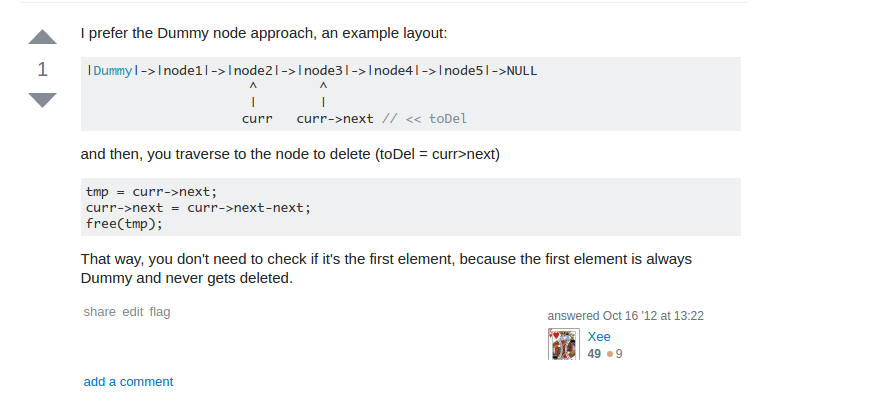

Oh My Pointer to Pointer
Oh My Pointer to Pointer
这是一篇关于C语言编程手法的博文。我们来讲讲指针，或者准确来说关于指针的一个奇技淫巧。
我记得之前看过一篇对Linus Torvalds的采访(一次演讲后的Q&A)，别人问他，作为一个内核开发者，他最喜欢的Hack是什么。Linus说，其实大多数内核开发都很平常，没有太神奇的地方，我之所以专注于做这方面的工作是因为我自己喜欢底层开发；如果要说我们的代码与其他人的有什么不同的话，那大概是，我们非常关注代码的质量，比如，对于指针的使用，那是非常关键的，但是很可惜的是，大多数人都没有完全理解指针......
下面是节选:
favorite hack by vlm
Question: I asked a bunch of hard architecture questions, now for a softball Q. Your favorite hack WRT kernel internals and kernel programming in general. drivers, innards, I don't care which. The kind of thing where you took a look at the code and go 'holy cow that's cool' or whatever. You define favorite, hack, and kernel. Just wanting to kick back and hear a story about cool code.
Linus: Hmm. You do realize that I don't get all that close to the code any more? I spend my time not coding, but reading emails, and merging stuff others wrote. And when I do get involved with the code, it's not because it's "cool", it's because it broke, and you'll find me cursing the people who wrote it, and questioning their parentage and that of their pets.
So I very seldom get involved in the really cool code any more, I'm afraid. I end up being involved in the "Holy sht, how did we ever merge that crp" code. Perhaps not as much as Greg (who has to deal with the staging tree), but then Greg is "special".
That said, we do have lots of pretty cool code in the kernel. I'm particularly proud of our filename lookup cache, but hey, I'm biased. That code is not for the weak of heart, though, because the whole lockless lookup (with fallbacks to more traditional locked code) is hairy and subtle, and mortals are not supposed to really look at it. It's been tweaked to some pretty extreme degrees, because it ends up being involved any time you look up a filename. I still remember how happy I was to merge the new lockless RCU filename lookup code last year.
At the opposite end of the spectrum, I actually wish more people understood the really core low-level kind of coding. Not big, complex stuff like the lockless name lookup, but simply good use of pointers-to-pointers etc. For example, I've seen too many people who delete a singly-linked list entry by keeping track of the "prev" entry, and then to delete the entry, doing something like
xxxxxxxxxxif (prev)prev->next = entry->next;elselist_head = entry->next;and whenever I see code like that, I just go "This person doesn't understand pointers". And it's sadly quite common.
People who understand pointers just use a "pointer to the entry pointer", and initialize that with the address of the list_head. And then as they traverse the list, they can remove the entry without using any conditionals, by just doing a "
*pp = entry->next".So there's lots of pride in doing the small details right. It may not be big and important code, but I do like seeing code where people really thought about the details, and clearly also were thinking about the compiler being able to generate efficient code (rather than hoping that the compiler is so smart that it can make efficient code despite the state of the original source code).
这是一个关于如何在一个单链表中删除一个节点的问题。Linus说，在删除一条单链表的中的一个节点的时候，很多人会把头节点和非头节点区分开来，但是其实这样的代码很丑，我们完全可以用一个指向指针的指针来处理这个问题，使得代码更加统一、高效。
Linus所反对的做法是：
xxxxxxxxxxif (prev) prev->next = entry->next;else list_head = entry->next;这里，要检查一下所指的是不是链表头，如果是链表头的话，采取的措施和非链表头的不一样。确实有些累赘。(注意我们没有写释放内存的代码，毕竟不一定需要释放内存，而且，释放内存的方法也多种多样)
把上面的代码写成一个完整的函数大概长这样：
xxxxxxxxxx// removes an element from a list by its valuevoid remove_elem(int value, linkedlist **p_list_head) { linkedlist *entry = *p_list_head; // starting at the head of the list... linkedlist *prev = NULL; // which has no previous element... while (entry) { // while we not the end of the list)... if (entry->value == value) { // if this node needs to be removed... if (prev) // if this is not the head)... prev->next = entry->next; else // otherwise this node is the head... *p_list_head = entry->next; } else { prev = entry; } entry = entry->next; // move to the next entry }}//这里省略了free的代码，仅仅是将那个对应的entry扔掉而已Linus认为，好一点的代码应该是这样的：
x
void remove_elem(int value, linkedlist **p_list_head) { linkedlist **pp = p_list_head; // starting at the head of the list... while (*pp) { if ((*pp)->value == value) // if this node needs to be removed... *pp = (*pp)->next; // have the list skip this entry... else pp = &((*pp)->next); // move to the next entry }}//注意这里省略了free掉那个node的代码什么意思呢？主要理解那个“指向指针的指针是怎么操作的：

这样，就不用管当前的entry/node是head还是其他了，因为现在我们是指向一个指针，而不是指针所指的地方。
其实，在我的记忆中，一般教科书上教单链表的时候，都会用一个没用的"头"来防止空指针的错误:

唔...沉思良久...
关于C语言的指针，一向都是有褒有贬，各种问题层出不穷，也没可以多说的了。我之所以想写这个，是因为刚刚碰巧写了一道LeetCode的题，然后发现用指针的指针真的用的很过瘾！
题目如下：
Merge k sorted linked lists and return it as one sorted list. Analyze and describe its complexity.
我的解法：
xxxxxxxxxx/** * Definition for singly-linked list. * struct ListNode { * int val; * ListNode *next; * ListNode(int x) : val(x), next(NULL) {} * }; */class Solution { ListNode *merge2(ListNode *lhs, ListNode *rhs){ ListNode *head = nullptr; ListNode **pp = &head; while(lhs || rhs){ if(lhs && rhs) { if(lhs->val < rhs->val){ *pp = lhs; lhs = lhs->next; }else{ *pp = rhs; rhs = rhs->next; } pp = &((*pp)->next); }else if(lhs && !rhs){ *pp = lhs; lhs = lhs->next; pp = &((*pp)->next); }else if(!lhs && rhs){ *pp = rhs; rhs = rhs->next; pp = &((*pp)->next); }// no other possibility } return head; }public: ListNode* mergeKLists(vector<ListNode*>& lists) { ListNode *lhs = nullptr; for(ListNode *rhs : lists){ lhs = merge2(lhs, rhs); } return lhs; }};References
[1]: 说出来你们可能不信，但是数组名确实不是指针，孙明琦，知乎
[2]: C语言结构体里的成员数组和指针，陈皓
[3]: Using pointers to remove item from singly-linked list，StackOverflow
Yubin Ruan, last modified in 2017-03-25
Comments powered by disqus